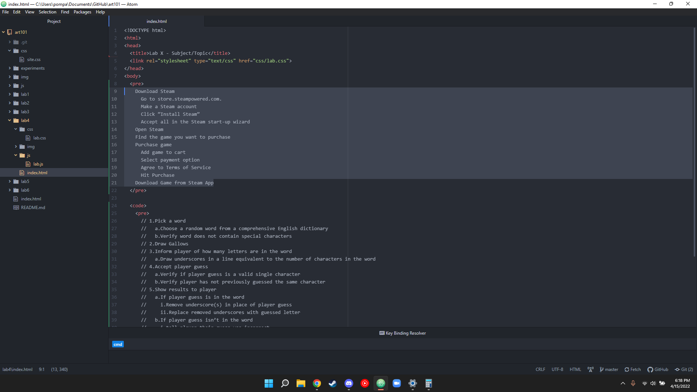
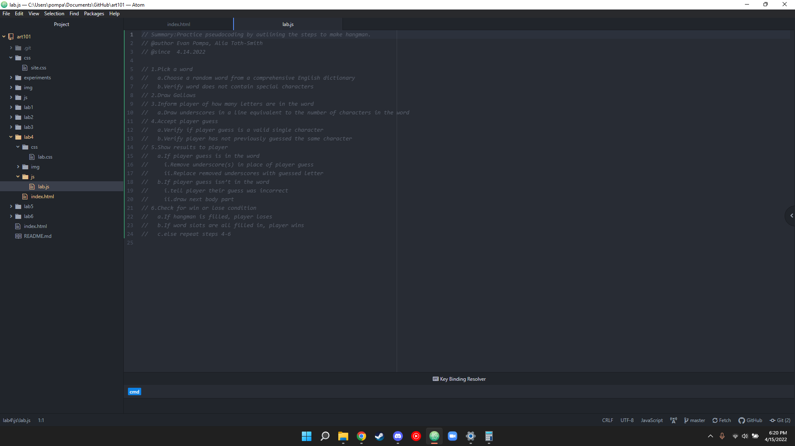
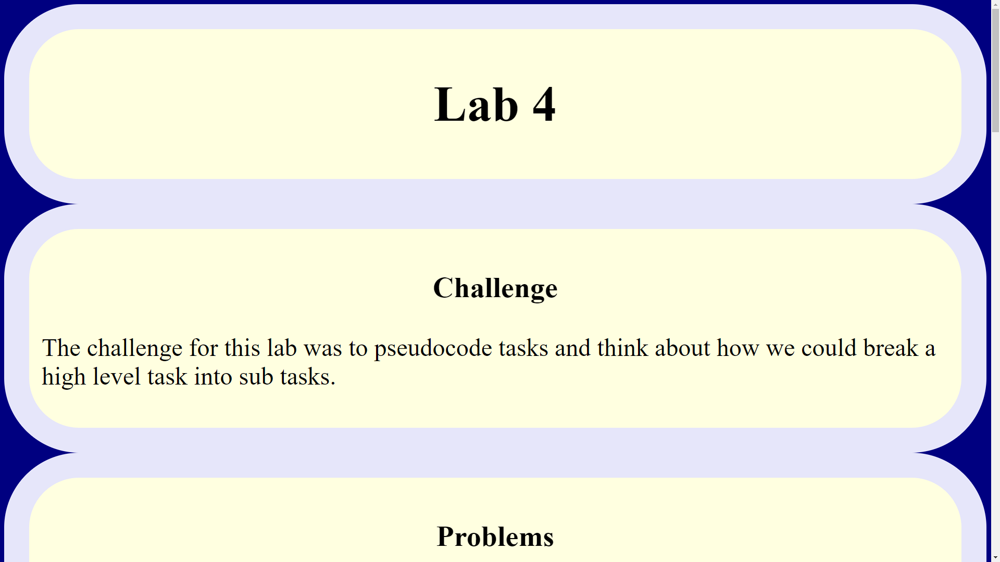
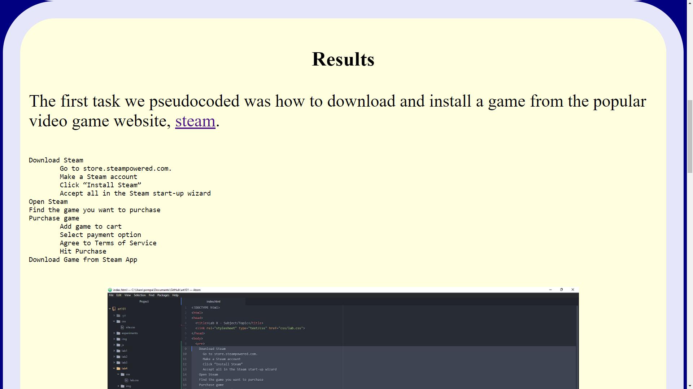

The challenge for this lab was to pseudocode tasks and think about how we could break a high level task into sub tasks.
I struggled with breaking down a task into high level steps. My steps are either too vague or too specific to classify as high level. Luckily this lab gave me some practice and experience, with my parrtner helping me aswell.
The first task we pseudocoded was how to download and install a game from the popular video game website, steam.
Download Steam
Go to store.steampowered.com.
Make a Steam account
Click “Install Steam”
Accept all in the Steam start-up wizard
Open Steam
Find the game you want to purchase
Purchase game
Add game to cart
Select payment option
Agree to Terms of Service
Hit Purchase
Download Game from Steam App

Screenshot of Evan’s real life task pseudo code in his html
Next, we pseudocoded a game of hangman, once we finished we turned the process into javascript comments.
// 1.Pick a word
//a.Choose a random word from a comprehensive English dictionary
//b.Verify word does not contain special characters
// 2.Draw Gallows
// 3.Inform player of how many letters are in the word
//a.Draw underscores in a line equivalent to the number of characters in the word
// 4.Accept player guess
//a.Verify if player guess is a valid single character
//b.Verify player has not previously guessed the same character
// 5.Show results to player
//a.If player guess is in the word
//i.Remove underscore(s) in place of player guess
//ii.Replace removed underscores with guessed letter
//b.If player guess isn’t in the word
//i.tell player their guess was incorrect
//ii.draw next body part
// 6.Check for win or lose condition
//a.If hangman is filled, player loses
//b.If word slots are all filled in, player wins
//c.else repeat steps 4-6

Screenshot of Evans JavaScript pseudo code comments
Finally, I uploaded all of the information you have read onto this webpage!
Picture of Evans completed webpage
Screenshot of Evans Results page on the index.html page.